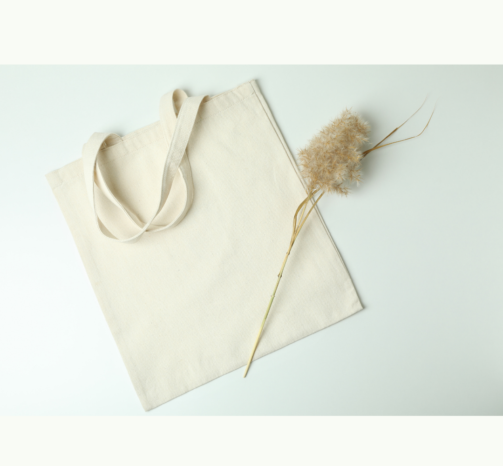

Conheça a Amor de Algodão
A Amor de Algodão é uma marca de peças artesanais que utiliza como tecido principal o algodão cru. O algodão cru é um tecido natural que tem característica versátil e resistente, além de ter uma excelente durabilidade. As peças também são formadas por tecidos secundários que podem ser sintéticos ou naturais para compor a criação dos produtos, deixando-os mais coloridos e divertidos.
